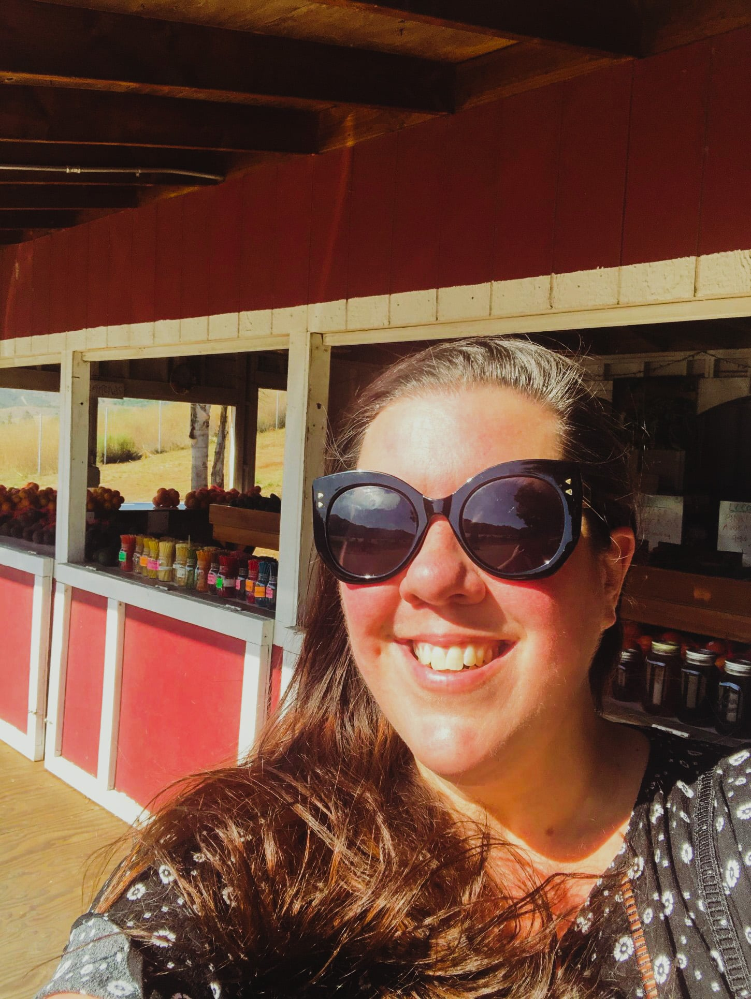

Behind the Scenes
Staged4Sale celebrates 20 years of home staging
How an Oceanside staging business grew through a housing crash, a pandemic, and two decades of changes in how people shop for homes.

When Tawni Oppenheim started Staged4Sale in 2006, a lot of sellers were hearing about home staging for the first time. “I printed out driving directions from MapQuest and hoped for the best,” she remembers.
Tawni saw home staging as a way to put her eye for design to work for sellers. She trained in Chicago with Barb Schwarz, widely credited as the founder of home staging, then built her business in Oceanside one home at a time.
Staging through a changing market
When the housing market crashed in 2008, sellers were competing for fewer buyers, and some were facing foreclosure. During that period, the Associated Press featured Tawni and her crew transforming a Southern California home in a single day. Years later, when COVID-19 changed how homes could be shown, the crew adapted how they worked so they could keep staging safely.
Twenty years in, we have a new logo and a larger warehouse. We choose from our own furniture inventory to stage everything from occupied condos to vacant coastal homes and new construction models. Some of the agents we work with come back listing after listing. They know how much thought goes into a detail as simple as where to put the sofa.
From MapQuest to AI
A listing photo can get a buyer through the door. Once they’re inside, the furniture helps them judge whether there’s space to host dinner, how people might gather in the living room, or where they’d sit with their morning coffee.
In the National Association of REALTORS®’ 2025 survey, 83% of buyers’ agents said staging helped buyers imagine living in the property. Read the 2025 Profile of Home Staging.
We’re exploring ways to use AI and online tools to make it easier for sellers and agents to work with us. Tawni has a favorite way of explaining what still matters at a showing.
“AI is a great tool, and we use it. But a buyer can’t sit on a virtual sofa.”
Thank you, North County
To the homeowners who trusted us with their keys, the agents who brought us back for another listing, and the crews who made it all happen, thank you for being part of our first 20 years.
Want to see how we put that approach to work in a real home? See the before and after at Monte Fuego Ranch.
Getting a home ready to sell?
We can help you decide which rooms to stage and where to start.
Explore staging consultations